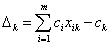

ПРЕОБРАЗОВАНИЕ ЦЕЛЕВОЙ ФУНКЦИИ ПРИ ПЕРЕХОДЕ ОТ ОДНОГО ОПОРНОГО РЕШЕНИЯ К ДРУГОМУ
Оптимальное решение задачи линейного программирования можно найти путём перебора не всех, а только части опорных решений.
Для этого необходимо каждое опорное решение проверять на оптимальность и переход от одного опорного решения к другому осуществлять таким образом, чтобы значение целевой
функции увеличивалось задача на максимум или уменьшалась в задаче на минимум.
Пусть имеется опорное решение задачи линейного программирования
с базисом
Значение целевой функции задачи на этом решении . Используя преобразование Жордана с разрешающим элементом , перейдем к другому опорному решению
с базисом , т.е. введем в базис вектор  и исключим . Значение целевой функции на этом решении
и исключим . Значение целевой функции на этом решении
Формулы пересчета правых частей уравнений системы при преобразовании Жордана имеют вид
Используя эти формулы, получаем
т.е.
Здесь -номер вектора, вводимого в базис опорного решения;
 - оценка разложения вектора условий по базису опорного решения, вычисляемая по формуле
- оценка разложения вектора условий по базису опорного решения, вычисляемая по формуле

или в векторной записи
 где - вектор коэффициентов целевой функции при базисных переменных - вектор коэффициентов разложения вектора по базису опорного решения -
коэффициент целевой функции при переменной
где - вектор коэффициентов целевой функции при базисных переменных - вектор коэффициентов разложения вектора по базису опорного решения -
коэффициент целевой функции при переменной  .
.
При переходе от одного опорного решения X1 к другому X2 приращение целевой функции находится по формуле